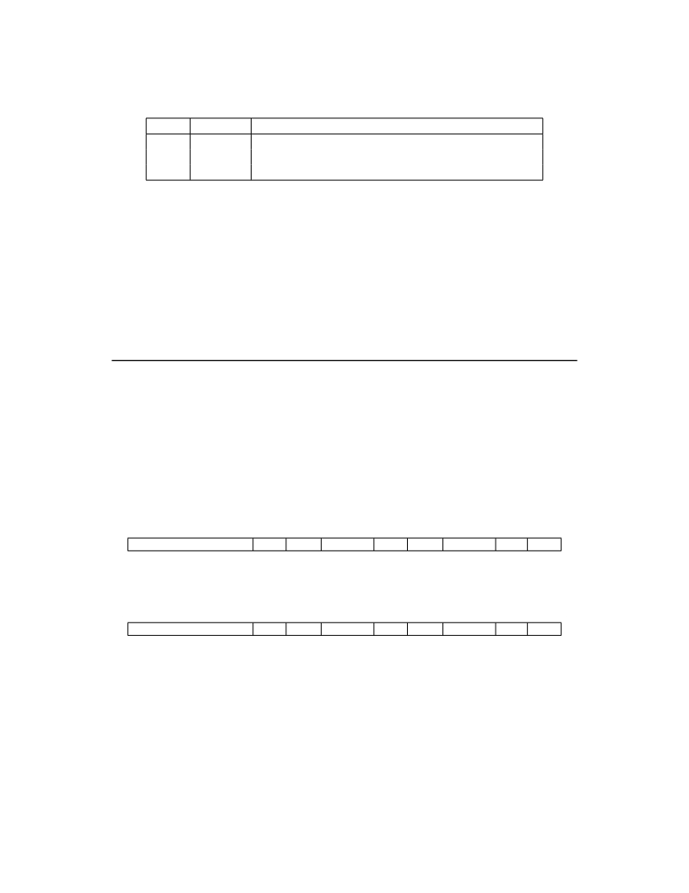

<table border="0" height="1453" width="1123">
<tr><td>
<div style="position:absolute; top:0; left:0;"></div>
<div style="position:absolute;top:74.119;left:132.145;"><nobr>
<span style="font-size:20.022;">58</span>
</nobr></div>
<div style="position:absolute;top:74.119;left:331.141;"><nobr>
<span style="font-size:20.022;font-style:italic;">Volume II: RISC-V Privileged Architectures V20190608-Priv-MSU-Ratified</span>
</nobr></div>
<div style="position:absolute;top:130.572;left:132.145;"><nobr>
<span style="font-size:20.022;">settings other than Direct might impose additional alignment constraints on the value in the BASE</span>
</nobr></div>
<div style="position:absolute;top:155.440;left:132.145;"><nobr>
<span style="font-size:20.022;">field.</span>
</nobr></div>
<div style="position:absolute;top:196.256;left:249.681;"><nobr>
<span style="font-size:20.022;">Value</span>
</nobr></div>
<div style="position:absolute;top:221.855;left:288.612;"><nobr>
<span style="font-size:20.022;">0</span>
</nobr></div>
<div style="position:absolute;top:246.723;left:288.612;"><nobr>
<span style="font-size:20.022;">1</span>
</nobr></div>
<div style="position:absolute;top:270.469;left:273.040;"><nobr>
<span style="font-size:20.022;font-style:italic;">≥</span>
<span style="font-size:20.022;">2</span>
</nobr></div>
<div style="position:absolute;top:196.256;left:334.395;"><nobr>
<span style="font-size:20.022;">Name</span>
</nobr></div>
<div style="position:absolute;top:221.855;left:332.560;"><nobr>
<span style="font-size:20.022;">Direct</span>
</nobr></div>
<div style="position:absolute;top:246.723;left:321.298;"><nobr>
<span style="font-size:20.022;">Vectored</span>
</nobr></div>
<div style="position:absolute;top:271.590;left:349.689;"><nobr>
<span style="font-size:20.022;">—</span>
</nobr></div>
<div style="position:absolute;top:196.256;left:420.778;"><nobr>
<span style="font-size:20.022;">Description</span>
</nobr></div>
<div style="position:absolute;top:221.855;left:420.778;"><nobr>
<span style="font-size:20.022;">All exceptions set pc to BASE.</span>
</nobr></div>
<div style="position:absolute;top:246.723;left:420.778;"><nobr>
<span style="font-size:20.022;">Asynchronous interrupts set pc to BASE+4</span>
<span style="font-size:20.022;font-style:italic;">×</span>
<span style="font-size:20.022;">cause.</span>
</nobr></div>
<div style="position:absolute;top:271.590;left:420.778;"><nobr>
<span style="font-size:20.022;font-style:italic;">Reserved</span>
</nobr></div>
<div style="position:absolute;top:335.741;left:372.798;"><nobr>
<span style="font-size:20.022;">Table 4.1: Encoding of stvec MODE field.</span>
</nobr></div>
<div style="position:absolute;top:387.180;left:132.145;"><nobr>
<span style="font-size:20.022;">The encoding of the MODE field is shown in Table</span>
<span style="font-size:20.022;color: #000080;"><a href="#" onClick="javascript:parent.GotoNewPage(69); return false">4.1</a></span>
<span style="font-size:20.022;">. When MODE=Direct, all traps into</span>
</nobr></div>
<div style="position:absolute;top:412.047;left:132.145;"><nobr>
<span style="font-size:20.022;">supervisor mode cause the pc to be set to the address in the BASE field. When MODE=Vectored,</span>
</nobr></div>
<div style="position:absolute;top:436.914;left:132.145;"><nobr>
<span style="font-size:20.022;">all synchronous exceptions into supervisor mode cause the pc to be set to the address in the BASE</span>
</nobr></div>
<div style="position:absolute;top:461.782;left:132.145;"><nobr>
<span style="font-size:20.022;">field, whereas interrupts cause the pc to be set to the address in the BASE field plus four times the</span>
</nobr></div>
<div style="position:absolute;top:486.649;left:132.145;"><nobr>
<span style="font-size:20.022;">interrupt cause number. For example, a supervisor-mode timer interrupt (see Table</span>
<span style="font-size:20.022;color: #000080;"><a href="#" onClick="javascript:parent.GotoNewPage(73); return false">4.2</a></span>
<span style="font-size:20.022;">) causes the</span>
</nobr></div>
<div style="position:absolute;top:513.180;left:132.145;"><nobr>
<span style="font-size:20.022;">pc to be set to BASE+ 0x14 . Setting MODE=Vectored may impose a stricter alignment constraint</span>
</nobr></div>
<div style="position:absolute;top:536.385;left:132.145;"><nobr>
<span style="font-size:20.022;">on BASE.</span>
</nobr></div>
<div style="position:absolute;top:597.113;left:182.201;"><nobr>
<span style="font-size:18.285;font-style:italic;">When vectored interrupts are enabled, interrupt cause 0, which corresponds to user-mode soft-</span>
</nobr></div>
<div style="position:absolute;top:619.054;left:182.201;"><nobr>
<span style="font-size:18.285;font-style:italic;">ware interrupts, are vectored to the same location as synchronous exceptions. This ambiguity</span>
</nobr></div>
<div style="position:absolute;top:640.996;left:182.201;"><nobr>
<span style="font-size:18.285;font-style:italic;">does not arise in practice for supervisor software, since user-mode software interrupts are either</span>
</nobr></div>
<div style="position:absolute;top:662.938;left:182.201;"><nobr>
<span style="font-size:18.285;font-style:italic;">disabled or delegated to user mode.</span>
</nobr></div>
<div style="position:absolute;top:731.020;left:132.145;"><nobr>
<span style="font-size:21.942;font-weight:bold;">4.1.5</span>
</nobr></div>
<div style="position:absolute;top:731.020;left:207.516;"><nobr>
<span style="font-size:21.942;font-weight:bold;">Supervisor Interrupt Registers (</span>
<span style="font-size:21.942;">sip</span>
<span style="font-size:21.942;font-weight:bold;">and</span>
<span style="font-size:21.942;">sie</span>
<span style="font-size:21.942;font-weight:bold;">)</span>
</nobr></div>
<div style="position:absolute;top:788.784;left:132.145;"><nobr>
<span style="font-size:20.022;">The sip register is an SXLEN-bit read/write register containing information on pending interrupts,</span>
</nobr></div>
<div style="position:absolute;top:813.651;left:132.145;"><nobr>
<span style="font-size:20.022;">while sie is the corresponding SXLEN-bit read/write register containing interrupt enable bits.</span>
</nobr></div>
<div style="position:absolute;top:859.156;left:220.965;"><nobr>
<span style="font-size:14.628;">SXLEN-1</span>
</nobr></div>
<div style="position:absolute;top:859.156;left:390.020;"><nobr>
<span style="font-size:14.628;">10</span>
</nobr></div>
<div style="position:absolute;top:859.156;left:435.922;"><nobr>
<span style="font-size:14.628;">9</span>
</nobr></div>
<div style="position:absolute;top:859.156;left:491.435;"><nobr>
<span style="font-size:14.628;">8</span>
</nobr></div>
<div style="position:absolute;top:859.156;left:536.855;"><nobr>
<span style="font-size:14.628;">7</span>
</nobr></div>
<div style="position:absolute;top:859.156;left:594.796;"><nobr>
<span style="font-size:14.628;">6</span>
</nobr></div>
<div style="position:absolute;top:859.156;left:633.282;"><nobr>
<span style="font-size:14.628;">5</span>
</nobr></div>
<div style="position:absolute;top:859.156;left:689.512;"><nobr>
<span style="font-size:14.628;">4</span>
</nobr></div>
<div style="position:absolute;top:859.156;left:735.283;"><nobr>
<span style="font-size:14.628;">3</span>
</nobr></div>
<div style="position:absolute;top:859.156;left:793.224;"><nobr>
<span style="font-size:14.628;">2</span>
</nobr></div>
<div style="position:absolute;top:859.156;left:830.306;"><nobr>
<span style="font-size:14.628;">1</span>
</nobr></div>
<div style="position:absolute;top:859.156;left:883.712;"><nobr>
<span style="font-size:14.628;">0</span>
</nobr></div>
<div style="position:absolute;top:878.733;left:282.804;"><nobr>
<span style="font-size:16.456;font-weight:bold;">WPRI</span>
</nobr></div>
<div style="position:absolute;top:899.577;left:270.777;"><nobr>
<span style="font-size:16.456;">SXLEN-10</span>
</nobr></div>
<div style="position:absolute;top:878.733;left:420.244;"><nobr>
<span style="font-size:16.456;">SEIP UEIP</span>
</nobr></div>
<div style="position:absolute;top:899.577;left:435.572;"><nobr>
<span style="font-size:16.456;">1 1</span>
</nobr></div>
<div style="position:absolute;top:878.733;left:538.934;"><nobr>
<span style="font-size:16.456;font-weight:bold;">WPRI</span>
</nobr></div>
<div style="position:absolute;top:899.577;left:562.632;"><nobr>
<span style="font-size:16.456;">2</span>
</nobr></div>
<div style="position:absolute;top:878.733;left:617.274;"><nobr>
<span style="font-size:16.456;">STIP UTIP</span>
</nobr></div>
<div style="position:absolute;top:899.577;left:632.901;"><nobr>
<span style="font-size:16.456;">1 1</span>
</nobr></div>
<div style="position:absolute;top:878.733;left:737.376;"><nobr>
<span style="font-size:16.456;font-weight:bold;">WPRI</span>
</nobr></div>
<div style="position:absolute;top:899.577;left:761.032;"><nobr>
<span style="font-size:16.456;">2</span>
</nobr></div>
<div style="position:absolute;top:878.733;left:815.716;"><nobr>
<span style="font-size:16.456;">SSIP USIP</span>
</nobr></div>
<div style="position:absolute;top:899.577;left:829.902;"><nobr>
<span style="font-size:16.456;">1 1</span>
</nobr></div>
<div style="position:absolute;top:946.993;left:317.655;"><nobr>
<span style="font-size:20.022;">Figure 4.4: Supervisor interrupt-pending register ( sip ).</span>
</nobr></div>
<div style="position:absolute;top:996.894;left:220.965;"><nobr>
<span style="font-size:14.628;">SXLEN-1</span>
</nobr></div>
<div style="position:absolute;top:996.894;left:390.020;"><nobr>
<span style="font-size:14.628;">10</span>
</nobr></div>
<div style="position:absolute;top:996.894;left:435.923;"><nobr>
<span style="font-size:14.628;">9</span>
</nobr></div>
<div style="position:absolute;top:996.894;left:491.436;"><nobr>
<span style="font-size:14.628;">8</span>
</nobr></div>
<div style="position:absolute;top:996.894;left:536.855;"><nobr>
<span style="font-size:14.628;">7</span>
</nobr></div>
<div style="position:absolute;top:996.894;left:594.796;"><nobr>
<span style="font-size:14.628;">6</span>
</nobr></div>
<div style="position:absolute;top:996.894;left:633.282;"><nobr>
<span style="font-size:14.628;">5</span>
</nobr></div>
<div style="position:absolute;top:996.894;left:689.512;"><nobr>
<span style="font-size:14.628;">4</span>
</nobr></div>
<div style="position:absolute;top:996.894;left:735.283;"><nobr>
<span style="font-size:14.628;">3</span>
</nobr></div>
<div style="position:absolute;top:996.894;left:793.224;"><nobr>
<span style="font-size:14.628;">2</span>
</nobr></div>
<div style="position:absolute;top:996.894;left:830.306;"><nobr>
<span style="font-size:14.628;">1</span>
</nobr></div>
<div style="position:absolute;top:996.894;left:883.712;"><nobr>
<span style="font-size:14.628;">0</span>
</nobr></div>
<div style="position:absolute;top:1016.469;left:282.804;"><nobr>
<span style="font-size:16.456;font-weight:bold;">WPRI</span>
</nobr></div>
<div style="position:absolute;top:1037.313;left:270.777;"><nobr>
<span style="font-size:16.456;">SXLEN-10</span>
</nobr></div>
<div style="position:absolute;top:1016.469;left:420.244;"><nobr>
<span style="font-size:16.456;">SEIE UEIE</span>
</nobr></div>
<div style="position:absolute;top:1037.313;left:435.572;"><nobr>
<span style="font-size:16.456;">1 1</span>
</nobr></div>
<div style="position:absolute;top:1016.469;left:538.934;"><nobr>
<span style="font-size:16.456;font-weight:bold;">WPRI</span>
</nobr></div>
<div style="position:absolute;top:1037.313;left:562.632;"><nobr>
<span style="font-size:16.456;">2</span>
</nobr></div>
<div style="position:absolute;top:1016.469;left:617.274;"><nobr>
<span style="font-size:16.456;">STIE UTIE</span>
</nobr></div>
<div style="position:absolute;top:1037.313;left:632.901;"><nobr>
<span style="font-size:16.456;">1 1</span>
</nobr></div>
<div style="position:absolute;top:1016.469;left:737.376;"><nobr>
<span style="font-size:16.456;font-weight:bold;">WPRI</span>
</nobr></div>
<div style="position:absolute;top:1037.313;left:761.032;"><nobr>
<span style="font-size:16.456;">2</span>
</nobr></div>
<div style="position:absolute;top:1016.469;left:815.716;"><nobr>
<span style="font-size:16.456;">SSIE USIE</span>
</nobr></div>
<div style="position:absolute;top:1037.313;left:829.902;"><nobr>
<span style="font-size:16.456;">1 1</span>
</nobr></div>
<div style="position:absolute;top:1084.731;left:324.607;"><nobr>
<span style="font-size:20.022;">Figure 4.5: Supervisor interrupt-enable register ( sie ).</span>
</nobr></div>
<div style="position:absolute;top:1132.275;left:132.145;"><nobr>
<span style="font-size:20.022;">Three types of interrupts are defined: software interrupts, timer interrupts, and external interrupts.</span>
</nobr></div>
<div style="position:absolute;top:1157.143;left:132.145;"><nobr>
<span style="font-size:20.022;">A supervisor-level software interrupt is triggered on the current hart by writing 1 to its supervisor</span>
</nobr></div>
<div style="position:absolute;top:1182.010;left:132.145;"><nobr>
<span style="font-size:20.022;">software interrupt-pending (SSIP) bit in the sip register. A pending supervisor-level software</span>
</nobr></div>
<div style="position:absolute;top:1206.877;left:132.145;"><nobr>
<span style="font-size:20.022;">interrupt can be cleared by writing 0 to the SSIP bit in sip . Supervisor-level software interrupts</span>
</nobr></div>
<div style="position:absolute;top:1231.746;left:132.145;"><nobr>
<span style="font-size:20.022;">are disabled when the SSIE bit in the sie register is clear.</span>
</nobr></div>
<div style="position:absolute;top:1274.899;left:132.145;"><nobr>
<span style="font-size:20.022;">Interprocessor interrupts are sent to other harts by implementation-specific means, which will</span>
</nobr></div>
<div style="position:absolute;top:1299.766;left:132.145;"><nobr>
<span style="font-size:20.022;">ultimately cause the SSIP bit to be set in the recipient hart’s sip register.</span>
</nobr></div>
</td></tr>
</table>
